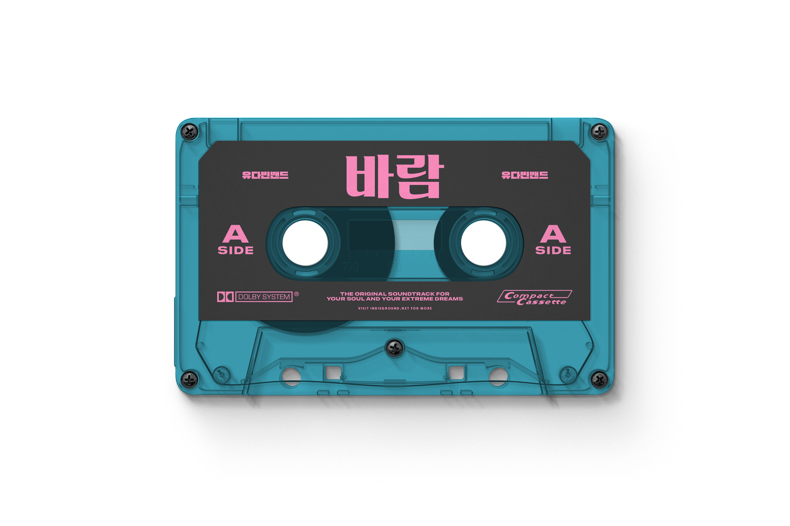
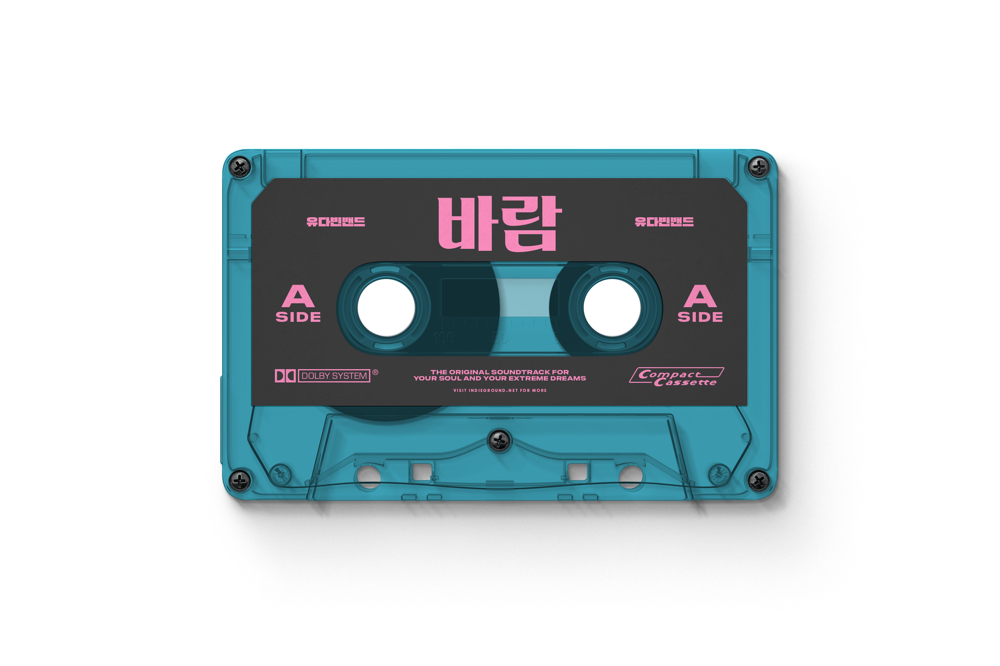

Wind
Yudabin Band
Issued October 21, 2024,
as part of the album *IGNITE*.
Distributed through Korean streaming platforms,
including Bugs and Genie.
Performed by 유다빈밴드,
with vocals and background vocals by the band.
Guitar by 이준형,
bass by 조영윤.
Piano, synthesizer, drums, and horn by 유명종,
arrangements blending acoustic warmth
with indie rock layering.
Available in high-resolution audio,
including FLAC 16-bit and 24-bit editions.
The track runs about 3:52,
and sits at the emotional heart of *IGNITE*.
*바람* carries a nostalgic mood,
pairing poetic lyrics with soaring vocals.
It reflects the band’s focus on
personal storytelling and live energy.